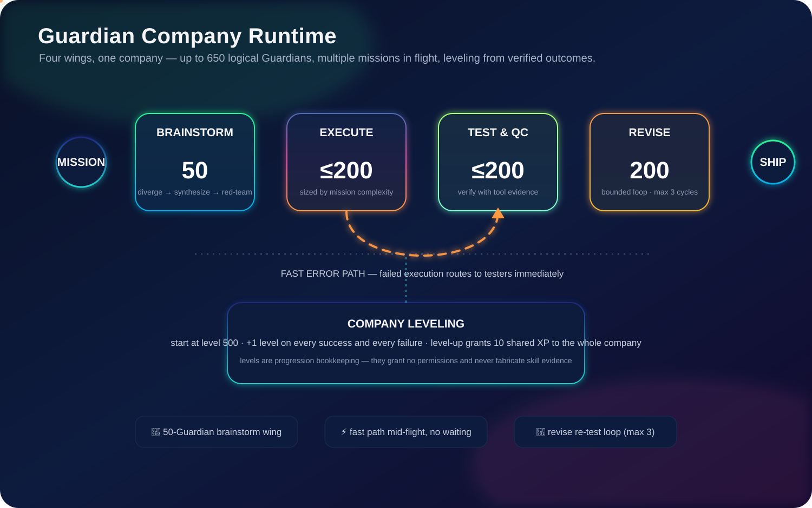
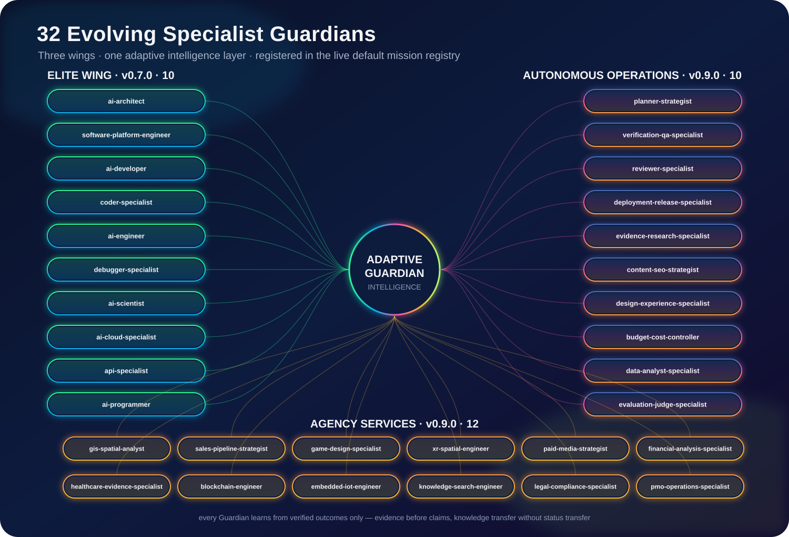
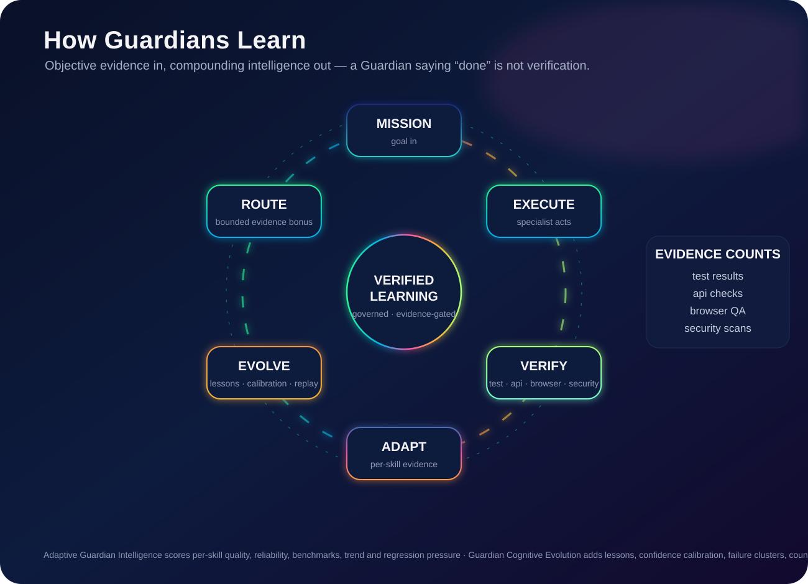
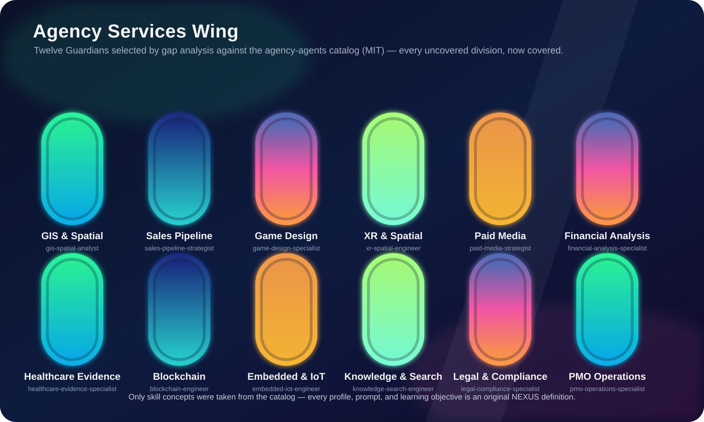

A reusable Guardian engineering runtime — Intelligence Fabric planning, adaptive specialist intelligence, Guardian Cognitive Evolution, permission-safe routing, verified execution, and a company of 650 logical Guardians that brainstorms, builds, tests, revises, levels up, and learns from every outcome.
Every capability below is live in the runtime, registered in the default mission registry, and guarded by the Controlled Tool Gateway — intelligence never inflates permissions.
Project-scoped authentication and approval gates; mission classification, strategy, uncertainty, assumptions, model evidence, and adversarial evaluation on every mission.
Verified per-skill quality, reliability, benchmark evidence, confidence, trend, regression pressure, and training priorities — updated only from objective outcomes.
Verified cross-Guardian lessons, confidence calibration, recurring failure-signature clusters, counterfactual replay plans, and personalized self-training curricula.
Routing combines registry utility, bounded direct skill evidence, and a smaller bounded cognitive signal. Authorization lives in the Controlled Tool Gateway — separate from intelligence.
Guardian Intelligence Lab, Promotion Gate, Regression Corpus, Benchmark Vault, replay, and coverage intelligence — plus browser/API/unit verification, bounded auto-repair, and SHA-256 evidence bundles.
Isolated Git worktrees, parallel coding coordination, durable SQLite execution, PostgreSQL lease-queue foundations, and a free/local OpenCode CLI provider across 75+ model providers.
nexus-guardians company runs missions the way a company runs the whole business — four wings working together, multiple missions in flight at once, and a fast error path that routes failed execution straight to testers.

Guardians level up only from verified swarm outcomes: every success grants +1 level, every failure grants +1 level (failures teach), and whenever any Guardian levels up, the entire company receives shared experience (10 XP per level-up; 100 XP settles into one level). Leveling is progression bookkeeping — it grants no permissions, and adaptive skill evidence still requires objective test/api/browser/security verification. Fully scaled: 650 logical Guardians (50 + 200 + 200 + 200); physical concurrency stays bounded by --max-parallel.
nexus-guardians company --provider opencode \
"Build the landing page" "Write the API docs" "Fix the checkout bug"Three wings — the original ten elite specialists, the ten-role Autonomous Operations Wing, and the twelve-role Agency Services Wing — all registered in the live default mission registry and deployable through the OpenCode subagent surface.

A Guardian merely saying "done" is not verification. Successful runs require objective test, api, browser, or security evidence before they can reinforce expertise; concrete runtime failures teach failure evidence automatically.

A Guardian may learn a verified pattern discovered by another specialist — but it never inherits the other's success rate, benchmark score, confidence, permissions, or routing authority. It must prove the capability itself.
Learning may adapt evidence, lessons, calibration, failure clusters, curricula, replay strategies, memory, and bounded routing preference. It may never mutate production model weights, grant permissions, approve benchmark truth, or bypass promotion gates.
GET /v1/projects/{project_id}/guardians/{guardian_id}/cognitive-summary exposes verified episodes, authored lessons, confidence reliability, counterfactual cycles, and the current curriculum.
Selected by gap analysis against the open agency-agents catalog (msitarzewski/agency-agents, MIT License) — every catalog division with no existing Guardian coverage is represented. Only skill concepts were taken; all profiles, prompts, and learning objectives are original NEXUS definitions, documented in provenance comments.

The canonical product name is Nexus Starship Guardians and the canonical CLI is nexus-guardians. Compatibility surfaces remain supported and tested across releases.
nexus_osThe import namespace is frozen. Version is exposed as nexus_os.__version__.
nexus-guardians · alias nexus-portableBoth entrypoints ship and pass doctor in the quality gates.
agent / agentsREST v1 wire field names remain stable for existing integrations.
NEXUS_*All environment variables keep the NEXUS_ prefix — including NEXUS_ADAPTIVE_INTELLIGENCE_PATH and NEXUS_COGNITIVE_EVOLUTION_PATH for persistent state.
pip install -e '.[dev]'
ruff check nexus_os tests examples
NEXUS_DEV_MODE=true pytest -q
nexus-guardians doctor
nexus-portable doctorGitHub Actions additionally validates Python 3.11/3.12/3.13, live HTTP, Docker health, PostgreSQL 16 integration, provider contracts, persistence, mission routing, adaptive/cognitive learning, benchmark replay, coverage intelligence, plugin/runtime alignment, and release artifacts.